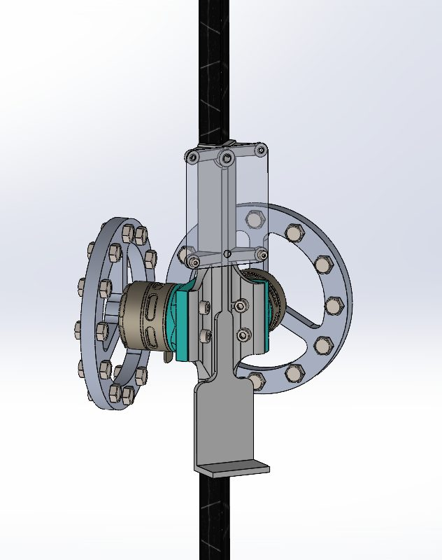
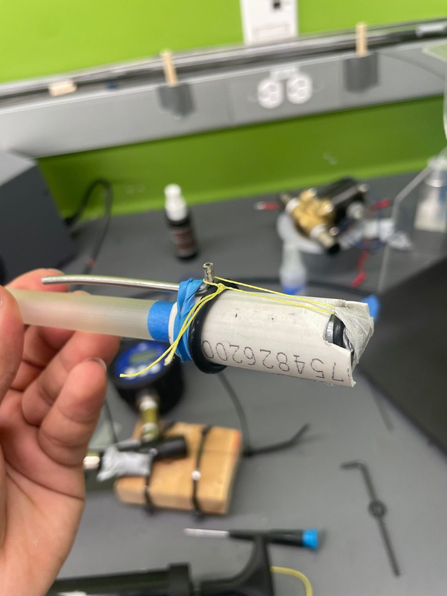
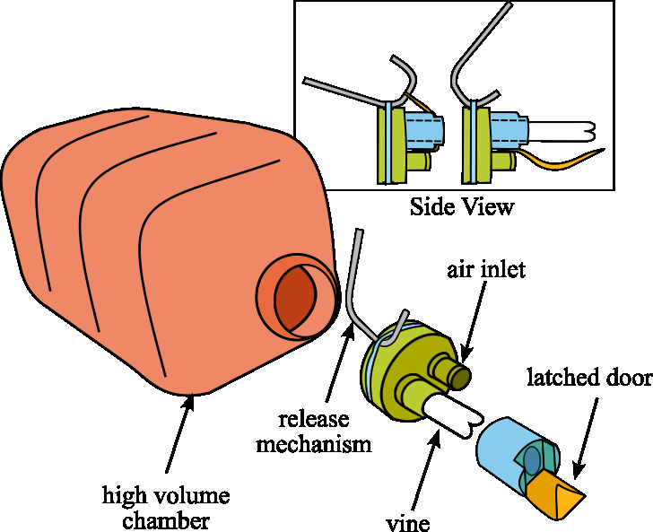
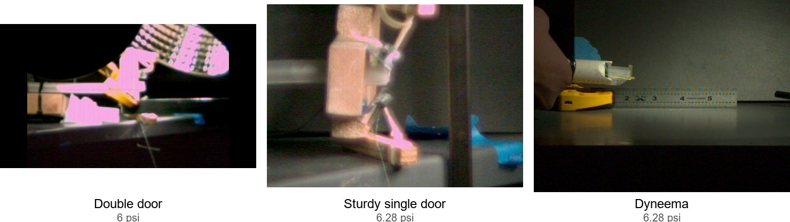
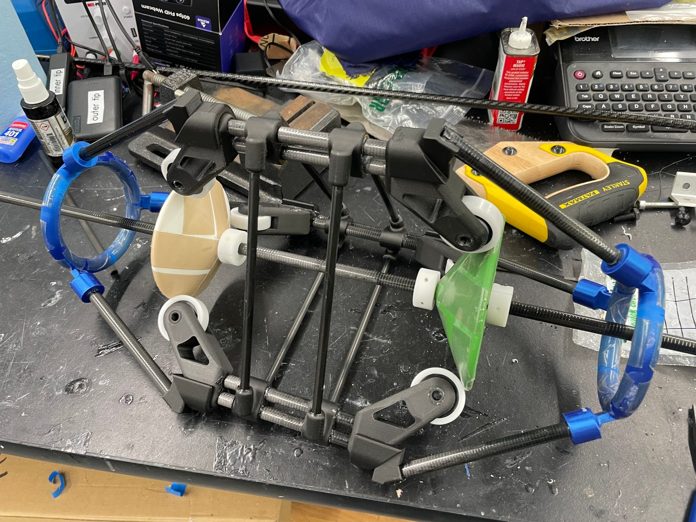

Cooper is a jumping robot that reorients itself in flight using a reaction wheel, as landing aligned lets it recoup the jump energy through the leg, which is where the name comes from. I designed and assembled the full system, covering the mechanical structure, BLDC actuation, IMU integration, and the embedded electronics, packaged compact and mass-constrained, then developed a reduced order dynamics model and compared control strategies in MATLAB, including standard LQR, a braking wheel approach, and an optimized trajectory T-LQR. The braking wheel approach turned out to be the cheapest in terms of energy usage, as once the wheel is braked there is no further way to control attitude for the rest of the flight, but this also made it the least robust. The final embedded implementation was a PD controller, chosen for simplicity of implementation while maintaining accurate control even with disturbances. It runs in C++ on an ESP32, estimating and correcting attitude in real time during ballistic flight, with telemetry streamed over WiFi to a Python debugging tool. In testing, the system reliably cancelled rotation once aligned, though gyro drift left some persistent error in the attitude estimate, which further tuning in simulation and testing will address. Code is on GitHub.
A strobe composite image of a throw, Cooper reorienting through the arc to land aligned.

Reaction wheel and motor assembly, mounted for bench testing.
High-speed vine robots
Feb 2024 – Oct 2025
For the millimeter scale rapid vine robots, I designed a latched door test system based on the spring loaded mechanisms found in jellyfish stingers, driven by a pneumatic actuation trigger synchronized with high-speed camera capture. I collected steady state velocity data as functions of driving pressure, payload mass, and scaled vine size, which the team used to fit coefficients for our dynamics model. I iterated through three release door mechanism designs to reduce door inertia. For each prototype, I captured each release at 16,000 fps and analyzed it in Tracker to extract steady state eversion velocity. The final taut thin Dyneema fabric single door design produced faster acceleration than the earlier designs (sturdy double and single door designs) across all tested pressures. Since less of the energy goes into rotating the mass in the door, the vines accelerate faster. This work led to coauthorship on A. Alvarez, A. Seawright, N. Tripathi, C. Cruz, S. Deng, and E. W. Hawkes, "High-Velocity, Pressure-Driven Eversion for Rapid Vine Robots," IEEE Robotics and Automation Letters, vol. 10, no. 10, pp. 9972-9978, Oct. 2025. The test rigs were machined on the lab's Tormach CNC mill and manual lathe.

The latched door test rig for the millimeter scale rapid vine robots, on the bench.

The full experimental setup from the RA-L paper, with the latched door labeled at right.The final Dyneema door releasing at 6.28 psi, captured at 16,000 fps and slowed for playback.

Eversion snapshot across the three door mechanisms, matched to about 6 psi driving pressure. Left to right: double door, sturdy single door, Dyneema.
Large vine robots
Nov 2022 – Feb 2024
For the large industrial inspection vine robot, I designed the sensor tip mount that prevents the body material from jamming during eversion, along with the lightweight frame and electronics mounting that relays data to a base station. I also built an automated inflatable column buckling test setup using O-ring-sealed pressure chambers, which helped establish two of the robot's control parameters: the required growth pressure and the minimum retraction pressure. I optimized several of the lightweight frame components for stiffness and mass using SolidWorks FEA, correlating the analysis against physical prototype testing. This work led to coauthorship on W. E. Heap, et al., "Large-Scale Vine Robots for Industrial Inspection," IEEE Robotics & Automation Magazine, vol. 32, no. 3, pp. 64-75, Sept. 2025. The tip mount prototypes were machined on the lab's Tormach CNC mill and manual lathe.

An early tip mount prototype for the large industrial inspection robot.
Cart-pendulum stabilization
Control systems lab, team of three · 2025
As part of a team of three, I helped identify the plant with both parametric and nonparametric methods, doing the identification with the pendulum hanging down, as that configuration is stable and simple to test directly, and flipping the sign on gravity in the model afterward to recover the inverted dynamics. I then helped design an LQR feedback controller with the Q and R matrices sized using Bryson's rule and a Kalman filter for state estimation to stabilize the underactuated cart-pendulum, validated against encoder and motor torque data from the real hardware.
The hardware, alongside the state vector used for identification and control.